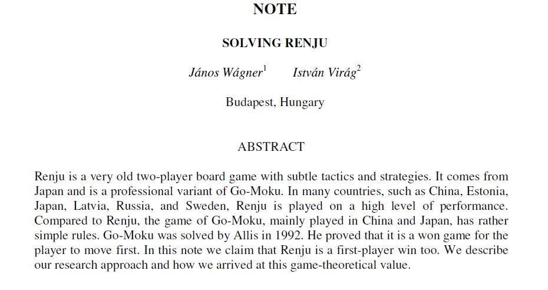
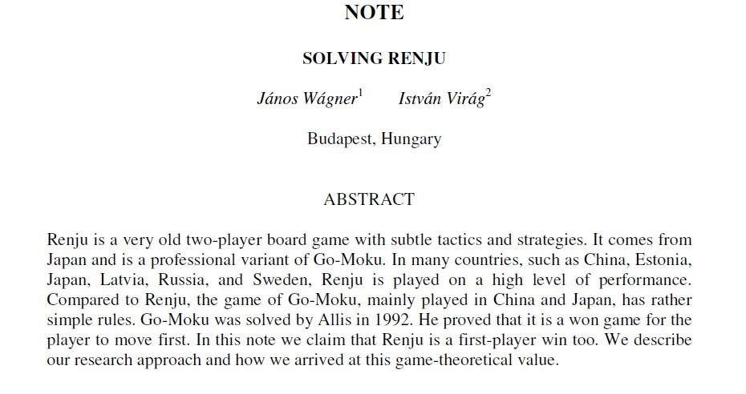

外国人早期分析连珠的短文SOLVING RENJU
#1 外国人早期分析连珠的短文SOLVING RENJU 作者：踵酃 发表时间：2013-7-22 13:18:49
早期分析连珠的短文【英文版】

下载连接 RenjuSolving.rar
RenjuSolving.rar
主要：简单介绍早期连珠的规则，下法，和程序的算法分析。
#2 Re:外国人早期分析连珠的短文SOLVING RENJU 作者：踵酃 发表时间：2013-7-22 13:23:47
在无禁规则下，1992年就已经被ALLIS证明先手必胜。
#1 外国人早期分析连珠的短文SOLVING RENJU 作者：踵酃 发表时间：2013-7-22 13:18:49
早期分析连珠的短文【英文版】

下载连接RenjuSolving.rar
主要：简单介绍早期连珠的规则，下法，和程序的算法分析。
#2 Re:外国人早期分析连珠的短文SOLVING RENJU 作者：踵酃 发表时间：2013-7-22 13:23:47
在无禁规则下，1992年就已经被ALLIS证明先手必胜。